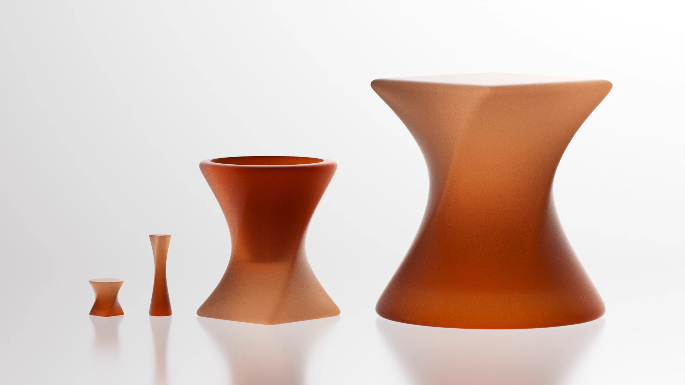

Mimilo
One shape expanded, flipped and twisted until it arrives somewhere else — a side table, a stool, a candle holder, a place for a plant.

One shape expanded, flipped and twisted until it arrives somewhere else — a side table, a stool, a candle holder, a place for a plant.